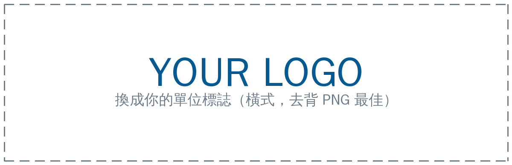

Digital Business Card
Industrial Technology Research Institute
沈怡如 Daisy Shen
研究員 · Researcher
智慧車輛（聯網自駕車、車用電子）、無人載具（無人機）
工業技術研究院
產業科技國際策略發展所
智慧移動載具與應用研究部 機械與系統研究組
相關連結LinkedIn
ABOUT
智慧車輛與無人載具研究
沈怡如（Daisy Shen）現任工研院產業科技國際策略發展所研究員，畢業於國立交通大學運輸科技與管理學系研究所，專長領域為智慧車輛及陸空無人載具。
曾任先進駕駛輔助系統軟體公司專案管理，及 FPGA 高階開發套件公司生產管理職務。目前研究領域為無人機、聯網自駕車、智慧交通及車用電子等相關產業。
- 聯網自駕車
- 車用電子
- 無人載具（無人機）
- 先進駕駛輔助系統（ADAS）
- 智慧運輸系統（ITS）
紙本名片
點一下翻面 · 目前顯示中文面
儲存名片
留下這次相識的線索
以下資料只用於即時產生聯絡人檔案，不建立資料庫紀錄，也不會提供給沈怡如。
相識地點
選填，只用於即時產生 VCF，不建立資料庫紀錄
手機會先開啟分享選單；請選擇「聯絡人」。若沒有此選項，可先「儲存到檔案」再開啟 VCF。
長按這裡另存聯絡人檔案